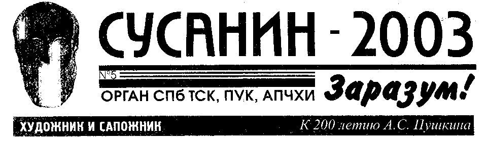
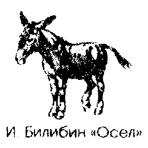
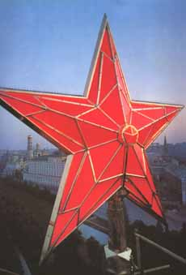

|
Редакция |
Особенность статей об искусстве в петербургской прессе последних лет выражается в том, что по заметке о выставке, диалогу о художнике или рецензии на книгу мы практически ничего не можем узнать о выставке, художнике или книге. Можно с легкостью составить психологический портрет пишущего, узнать подробности его быта, отметить конфликты половой жизни и увидеть, что было бы явно лучше, если бы выставки, художника, или книги не существовало вообще, как объектов недостойных внимания, поскольку его достоин исключительно автор статьи, у которого жизнь может быть не так сложилась, а то бы он сам стал великим художником, куратором, критиком. Таким образом, если задача газетно-журнальных статей об искусстве - уничтожение объекта описания, а точнее - предлога описания, то с этой задачей люмпен-журнализм от искусства вполне справляется. Виктор Мазин |
|
И.А.Кылов. СВИНЬЯ |
А.С.Пушкин. САПОЖНИК (Притча) |
М.Ю.ЛЕРМОНТОВ. Журналист, читатель и писатель |
|---|---|---|
Свинья на барский двор когда-то затесалась; Не дай бог никого сравненьем мне обидеть! | Картину раз высматривал сапожник Есть у меня приятель на примете:  | Читатель [...]Когда же на Руси бесплодной, Я точно то же говорю; Читал я - Мелкие нападки |
| И.С.ТУРГЕНЬЕВ. Из "Стихотворений в прозе" |
|---|
| «ДУРАК» | |
|---|---|
Жил был на свете дурак. |
- Помилуйте! - воскликнул дурак. - N.N. - заведомый подлец!
Родню всю ограбил. Кто ж этого не знает? Вы - отсталый человек. Третий знакомый тоже испугался - и согласился с дураком, отступился от друга. И кого бы, что бы ни хвалили при дураке - у него на все была одна отповедь. Разве иногда прибавит с укоризной: - А вы ещё верите в авторитеты? - Злюка! Желчевик! - начинали толковать о дураке его знакомые. - Но какая голова. - И какой язык! - прибавляли другие. - О, да он талант! - Кончилось тем, что издатель одной газеты предложил дураку заведовать у него критическим отделом. И дурак стал критиковать все и всех, нисколько не меняя ни манеры своей, ни своих восклицаний. Теперь он, кричавший некогда против авторитетов, - сам авторитет - и юноши перед ним благоговеют и боятся его. Да и как им быть, бедным юношам? Хоть и не следует, вообще говоря, благоговеть... в отсталые люди попадешь! Житье дуракам между трусами. |
| «ПИСАТЕЛЬ И КРИТИК» |
|---|
Писатель сидел у себя в комнате за рабочим столом.
Вдруг входит к нему критик. |
| ...ИСЬ ЗАРАЗУМ | ИНСТИТУТЫ, ИНСТИТУЦИИ И ИНСТИТУТКИ | |||||||
|---|---|---|---|---|---|---|---|---|
Семена, посеянные АПЧХИ (Ассоциация Поддержки Чрезвычайных Художественных Инициатив) и ПУК (Петербургский Университет Культуры) прошлым
летом на ниве творческой мысли о современной культуре,
приносят прекрасные плоды, С.Ануфриев, В.Лукка,
доц. А.Курбановский, А.Кукин, А.Китаев, Ю.Лейдерман,
проф. Линник, А.Драгомощенко, М.Колдобская, В.Кондратьев,
Г.Морев, А.Митрофанова, Д.Пиликин, А.Хлобыстин,
Е.Кондратьев, О.Суслова, проф. А.Грякалов, А.Кострома и др. -
все эти мыслители и художники, выступавшие на семинарах
"Маргинальная академическая мысль и современное
искусство" проф. В.Савчука, "Гуманитарное ателье "Амплитуда"
А.Скидана и Д.Голынко-Вольфсона и "Арт-Локус-Транзит"
С. Веселовой превратили крупнейший центр современного
искусства - "Пушкинская-10" еще и в главный интеллектуальный
центр Петербурга. Многие художники воспринимают
семинары, как возможность пожаловаться. Так, Лукка сетовал
на печальную судьбу России, Китаев - на отсутствие учителей
(почему сам не воспитает ученика?), Кострома - на отсутствие
"братьев по разуму". Некоторые семинары собирают более
полусотни человек. На выступление Лукки собрались лучшие
бороды "Пушкинской" Выделялась "испаньолка" Ковальского,
"карабаска" Воинова, "полутолстовка" Орлова-ст.,
"евангелистка" самого докладчика. Бороды опять вошли в моду
среди художников. Те же, кто природой лишен растительности
на лице и стыдятся ходить со "скобленым рылом" стали
прибегать к накладным бородам. В последнем отличился
А. Хлобыстин, повидимому полагающий, что сила
нон-конформистского духа заключена в этом признаке
мужественности. Но вряд ли благодаря этой клуонаде бывалые
художники примут его за своего. С.И. Далилина |
|
| ИХ НРАВЫ | НАС СПРАШИВАЮТ |
|---|---|
Колонада акцентирует входы в три гостииные, стилизованные под старинные интерьеры, на стенах - картины (конечно, подлинники), тактично расставленные антикварные безделушки. Разбиваясь на группки, гости в костюмах от итальянских кутерье с бокалами шампанского разбредаются по гостиным. Так и представляешь, как хозяин под локоток уводит в гостиную-кабинет Сергея Шолохова - поговорить о том, о сем ("Как там на телевидении? Помощь не требуется?), в женской гостиной - свои разговоры, в холе Ананов демонстрирует незнакомке что-то из Фаберже, выпускник Оксфорда критикует лейбористов, заглянувший на огонек Борис Гребенщиков поет песни Вертинского. Наше прошлое возвращается. Недалек день возрождения традиции петербургских салонов: бал у губернатора Яковлева, среды у Граниных, прием для сбора средств в поддержку культуры у Ростроповича. Петр Коховский. "Новый взгляд на эклектику", На выставке "Весь Петербург" в ЦВЗ перформансист Баскин, выбирая укромные уголки зала, подходил к женщинам и девушкам и показывал им свой половой член. "Представление" было прекращено бабушкой-смотрителем, сложившей собственное мнение о перформансистах, которые постоянно сорят, блюют, поджигают и ходят голые по "Манежу". В то время, когда бабушка пыталась с руганью выставить перформансиста, другой "художник" - Гарри Зух, под предлогом "подержать коробочку для фотовспышки", заманивал женщин под лестницу, где их встречал С.Спирихин с опущенными штанами и распахнутым пальто. М.П.Бушуева | Сейчас много пишут о возрождении петербургских салонов. Как туда попасть? К. Р. СПб. Салоны относятся к неформальным общественным объединениям закрытого типа. Поэтому редакция не может туда кого-либо рекомендовать или сообщить их адреса. Но мы можем перечислить лучшие артистические салоны города, которыми признаны: салон лидера Новых СерьезныхГ.ГУРЬЯНОВА на Садовой (крайняя закрытость и элитарность, избранное общество, разговоры об искусстве ****) РЕЧНИКОВ на Кутузовской наб. (молодежная атмосфера, свежесть, животные, доступная, электроника, интеллигентность пост-индустриальный интерьер **** } БЕЛЛЫ МАТВЕЕВОЙ на Рылеева (разгул перенасыщенность, снобизм, элитарное общество встречает маргиналов, интерьер a'la Второй Декаданс ***} ГЛЮКЛИ на Камснноостровском (загадочная агмосфера, эротика, мистика, альтернативность, роскошная монсарда ***) САММИ на Суворовском (молодые рейверы в интерьере краснодеревной мебели с бюстами классиков ***) АФРИКИ-дейли на Миллионной {звезды, политики, коммерсанты, строгая охрана, изысканный интерьер ***) АФРИКИ-найтли на Фонтанке (DJ-и, девушки свободные от комплексов, ученые, богема, уникальный альтернативный интерьер 80-х ***) |
| ПРЕМИИ |
|---|
|

На конкурсе "Ночи Черные" На конкурсе "Петербургский текст" победила Елена Долгих На фестивале "Мамина Весна" первый приз выиграл Ю. Циркуль
М.Климова |
|
Редакция благодарит Е.Ю. Андрееву за подготовку номера к печати. |
|---|
| НОВОСТИ, СЛУХИ, СКАНДАЛЫ, СВЕТСКАЯ ХРОНИКА | |||||||||
|---|---|---|---|---|---|---|---|---|---|
|